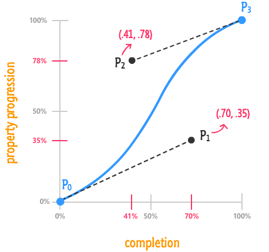
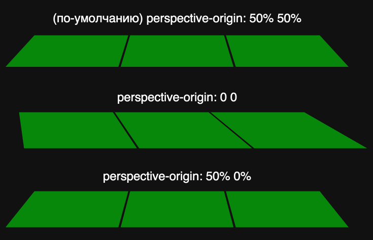
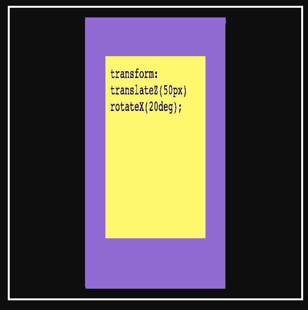
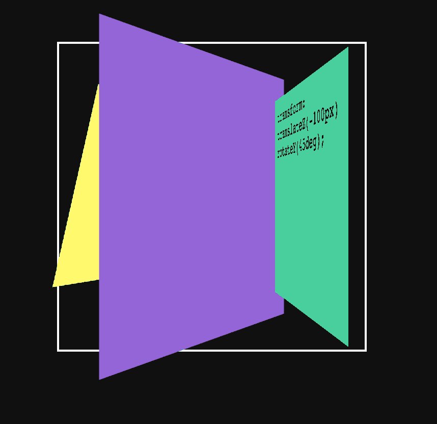
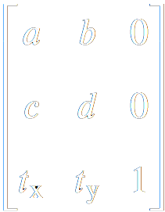
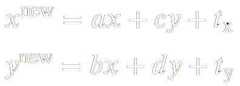
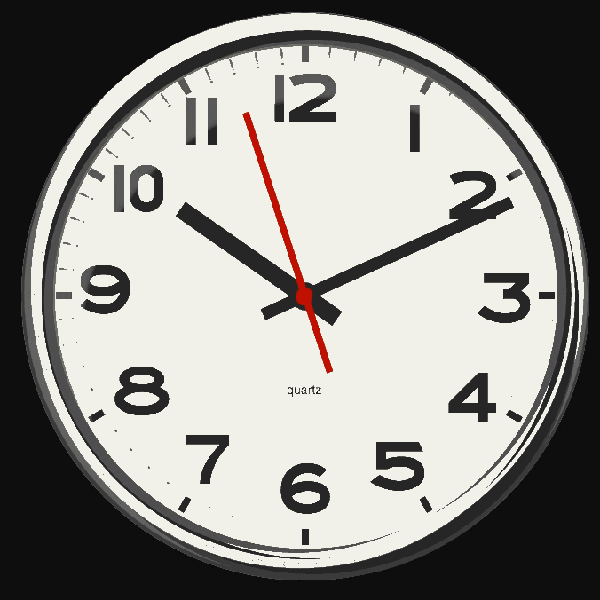

Анимации
Илья Степанов
Переход
Переход – это анимация от одного набора CSS свойств к другому.
Для перехода необходимо:
- начальный набор свойств (Ex: color: #f00;)
- конечный набор свойств (Ex: color: #00f;)
- Свойство transition – описание свойств и характеристик анимации перехода
- Изменение свойств от начального набора к конечному (Ex: JS, :hover, :focus etc.)
CSS-свойство transition
CSS-свойство transition
CSS-свойство transition
transition: <property> <duration> <timing-function> <delay>;transition-property
Устанавливает свойство, значение которого будет отслеживаться для создания эффекта перехода
transition-duration
Определяет продолжительность выполнения анимации
transition-timing-function
Устанавливает функциональную зависимость изменения свойства от времени
transition-timing-function: ease|ease-in|ease-out|ease-in-out|linear|step-start|step-end|steps|cubic-beziercubic-bezier
cubic-bezier

transition-timing-function: cubic-bezier(x1, y1, x2, y2)Онлайн конструктор
Примеры функций
transition-delay
Определяет задержку до выполнения анимации
transition
CSS-анимации
Преобразования
На текущий момент нам доступны:
Свойство transform
.box {
transform: тип_трансформации(значение);
}не влияет на окружение
Перемещение
.box {
width: 300px;
height: 100px;
/*transform: translate(X , Y );*/
transform: translate(100px, 100px);
}Перемещение в %
.box {
transform: translate(100%, 100%);
}.box-blue {
transform: translateX(100%);
}
.box-red {
transform: translateY(100%);
}Масштабирование
.blue {
/*Размер элемента = 150%*/
transform: scale(1.5);
}
.red {
/*Размер элемента = 50%*/
transform: scale(0.5);
}Масштабирование
.blue {
/* scale(X, Y )*/
transform: scale(1, 1.5);
}
.green {
/*Размер элемента по оси X = 50%*/
transform: scaleX(0.5);
}
.red {
/*Размер элемента по оси Y = 50%*/
transform: scaleY(0.5);
}Отрицательные значения
.blue {
transform: scale(1, -1);
}
.green {
transform: scale(-1, 1);
}
.red {
transform: scale(-2);
}Вращение
.like {
/*Поворот элемента вокруг оси на 180°*/
transform: rotate(180deg);
}.like {
transform: rotate(-180deg);
}Другие единицы измерения
.like {
/*Полтора оборота по часовой стрелке*/
transform: rotate(1.5turn);
/*1.5turn = 540deg = 600grad ≈ 9,42478rad*/
}Наклон
.red {
transform: skew(45deg, 0); /*skew(45deg)*/
}
.green {
transform: skew(0, 45deg); /*skewY(45deg)*/
}
.blue {
transform: skew(25deg, 25deg); /*или skew(25deg)*/
}Множественные преобразования
.box {
transform: scale(2) translateX(100px) rotate(45deg);
}Что будет?
.box {
transform: rotate(45deg) translateX(100px) scale(2);
}translateX(100px)
scale(2)
skew(45deg)
translateY(100px)
Исходная точка
.box {
transform: rotate(45deg);
transform-origin: left top;
/*transform-origin: 0;*/
/*transform-origin: 0 0;*/
/*transform-origin: 0% 0%;*/
}rotate(45deg)
3D
rotateX(360deg)
rotateY(360deg)
rotateZ(360deg)
translateX(100%)
translateY(100%)
translateZ(200px)
scale(2)
Перспектива
.3d_perspective {
perspective: 200px;
}Расположение точки
.3d_perspective {
/* по-умолчанию: perspective-origin: 50% 50%; */
}
.3d_perspective_lt {
perspective-origin: 0 0;
}
.3d_perspective_ct {
perspective-origin: 50% 0%;
}
.3d_perspective_rt {
perspective-origin: right top;
}
transform-style
Сообщает о том что дочерние элементы позиционируются в 3D-пространстве.
.wrapper {
/*по умолчанию flat*/
transform-style: preserve-3d;
}

backface-visibility
Определяет видимость задней стороны объекта.
Свойства transform
| 2D | 3D |
|---|---|
| translate(x,y) | translate3d(x,y,z) |
| scale(x,y) | scale3d(x,y,z) |
| rotate(angle) | rotate3d(x,y,z,angle) |
| matrix(a, b, c, d, e, f) | matrix3d(a,b,c,d,e,f,g,h,i,j,k,l,m,n,o,p) |
rotate3d(1, 1, 1, 180deg)
Матрица преобразований
.matrix {
/* matrix(a, c, b, d, tx, ty);*/
transform: matrix(2, 0, 0, 1, 0, 0);
}

.matrix {
/* matrix(a, c, b, d, tx, ty);*/
transform: matrix(2, 0, 0, 1, 0, 0);
}| Коэффициент | Преобразование | Аналог |
|---|---|---|
| a | Изменение размера по горизонтали | scaleX() |
| b | Наклон по горизонтали | skewX() |
| c | Наклон по вертикали | skewY() |
| d | Изменение размера по вертикали | scaleY() |
| tx | Смещение по горизонтали в пикселах | translateX() |
| ty | Смещение по вертикали в пикселах | translateY() |
Анимации
Свойство animation
Позволяет анимировать переходы между ключевыми кадрами.
Для создания анимации необходимо:
- Определить ключевые кадры - содержат свойства, которые применяются в определенный момент времени при анимации.
- Применение анимации к элементу.
Ключевые кадры
@keyframes animationName {
from {
/*css свойства для первого кадра*/
}
to {
/*css свойства для второго кадра*/
}
}Задержка анимации
Тип анимации
Тип анимации
Повторение анимации
Повторение анимации
.seconds {
animation-name: seconds;
animation-duration: 60s;
animation-iteration-count: infinite;
}
Направление анимации
Направление анимации
animation-direction
- normal — значение по умолчанию, анимация воспроизводится от начала до конца, после чего возвращается к начальному кадру.
- reverse — анимация проигрывается в обратном порядке, от последнего ключевого кадра до первого, после чего возвращается к последнему кадру.
- alternate — каждый нечётный повтор анимации воспроизводится в прямом порядке, а каждый чётный повтор анимации воспроизводится в обратном порядке.
- alternate-reverse — аналогично значению alternate, но чётные и нечётные повторы меняются местами.
Стили ключевых кадров
Стили ключевых кадров
animation-fill-mode
- none - значение по умолчанию, стили анимации не применяются до и после проигрывания анимации.
- forwards — после окончания анимации элемент сохранит стили последнего ключевого кадра.
- backwards - после окончания анимации к элементу будут применены стили первого ключевого кадра.
- both — до начала анимации к элементу применяется первый ключевой кадр, а после окончания анимации элемент останется в состоянии последнего ключевого кадра.
Краткая запись
.long {
animation-name: scale;
animation-duration: 2s;
animation-timing-function: ease-in-out;
animation-iteration-count: 3;
animation-direction: alternate;
animation-delay: 5s;
animation-fill-mode: forwards;
}.short {
animation: scale 2s ease-in-out 3 alternate 5s forwards;
}.multi-short {
animation: scale 2s ease-in, move 2s ease-out;
}Управление анимацией
.b-heart {
...
animation: heartBeat 1s ease infinite;
}
.b-heart:hover {
animation-play-state: paused;
}Эффект печати
typing {
width: 0;
white-space: nowrap;
overflow: hidden;
border-right: 1px solid;
}
.typing.visible {
animation: typing 4s steps(15) forwards,
caret 1s steps(1) infinite;
}
@keyframes typing { to { width: 15ch; } }
@keyframes caret { 50% { border-color: transparent; } }
Движение по кругу

.circle.run { animation: spin 4s linear infinite; }
@keyframes spin { to { transform: rotate(1turn); } }Движение по кругу
Движение по кругу
Примеры:
Creative Link EffectsDay night
Solar System
Pure css